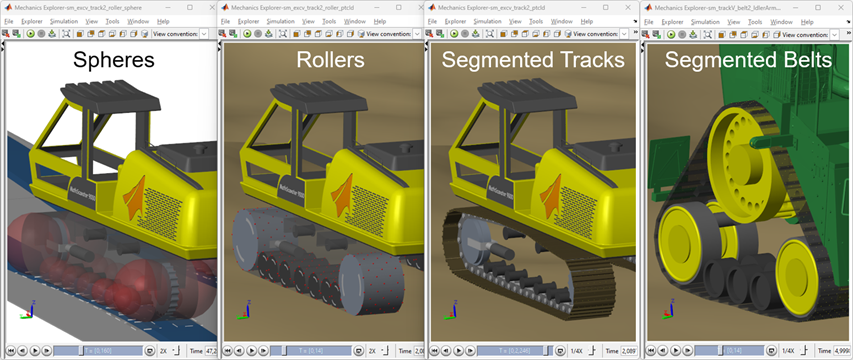
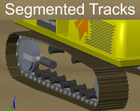
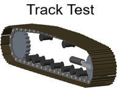
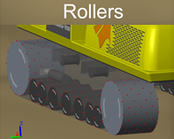
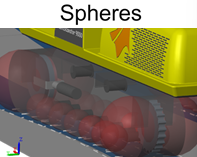

Tracked Vehicle Model with Simscape™

This repository contains models and code to help engineers model and simulate tracked vehicles.
- Fully parameterized models of tracked and multi-axle vehicles
- Detailed and abstract variants for efficient testing of different systems
- Modular library elements enable assembly of parameterized tracked vehicles.
- Customizable contact force definition enable models tailored to simulation task.
- MATLAB code enables automation of modeling, simulation, and post-procesing tasks.
Segmented Track Models
These models can drive on uneven surfaces and capture the details of modeling each segment of the track as it contacts with the ground.
|  |
Segmented Track Test Examples
|  |
Rollers - Track Rolling on Point Clouds
These models can drive on uneven surfaces and run very fast due to the abstract method of modeling the track drive. They are useful for refining requirements for the mechanical and powertrain system.
|  |
Spheres - Track Rolling on Spheres
These models can drive on flat and uneven surfaces. This model simulates extremely fast due to the simple nature of the track drive. They are useful for testing driver commands and gathering powertrain requirements.
|  |